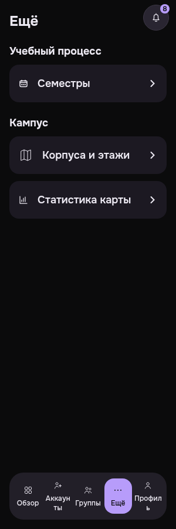
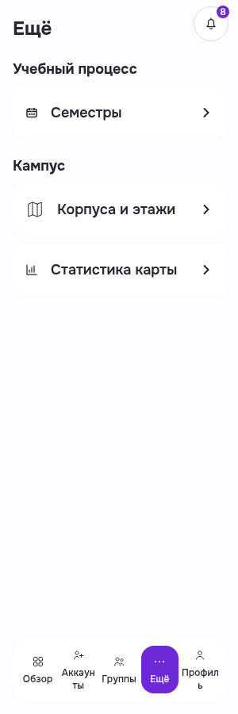

PWA Admin More: повторное использование оригиналов
Два оригинала лично просмотрены и проверены по SHA256. Original79e real PWA render; historical original Auth/cleanup limits retained. This is not a new current-runtime PASS. Admin More core/template branch unchanged; changed common navigation explicitly qualified by source only. Root20/focus/768 and full screen state/width readiness not claimed.
Manifest · Критерии и ограничения
Администратор · Ещё · retained dark · 300
Actual retained300/root16 original shows More title, Academic/Semesters and Campus/buildings+mapstatistics readonly navigation rows; readable boththemes. This is old79e render, not currentAuth/runtime proof.
PWA-MOBILE-ADMINMORE__retained-native-baseline__dark__300__79e8fdce6
revision 79e8fdce620af0493287469725e82bee511b2e8f
SHA256 279d12cb929f921a916ef1571ed6d2739e511d6851927f2a78d5f227a66fb3a8

Администратор · Ещё · retained light · 300
Actual retained300/root16 original shows More title, Academic/Semesters and Campus/buildings+mapstatistics readonly navigation rows; readable boththemes. This is old79e render, not currentAuth/runtime proof.
PWA-MOBILE-ADMINMORE__retained-native-baseline__light__300__79e8fdce6
revision 79e8fdce620af0493287469725e82bee511b2e8f
SHA256 9d0059e803fbf15bf91d3916d5889a354493a47184d6387631de6bdbe3aedd47
